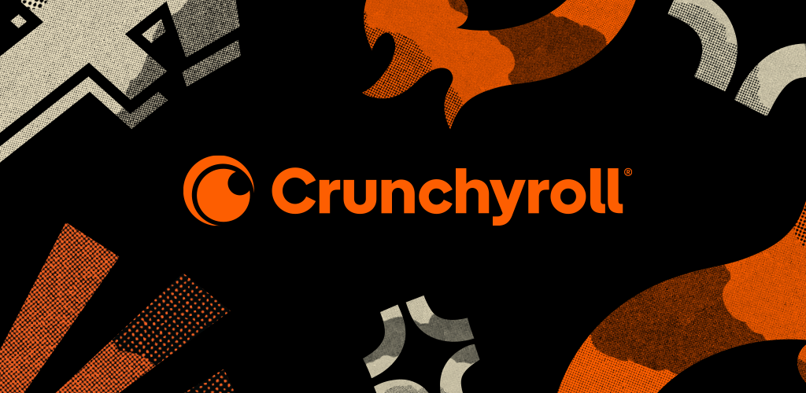

Historia Da Crunchyroll
Crunchyroll, LLC é uma empresa americana, subsidiária da Sony, responsável por distribuição,
licenciamento e publicação de anime detentora de uma comunidade online internacional focada
na transmissão de vídeo de mídia asiática oriental, incluindo anime, mangá, dorama, música,
entretenimento eletrônico e conteúdo.

Primeira logo
O Crunchyroll foi lançado em 14 de maio de 2006 como um site pirata especializado em hospedar
conteúdo do Leste Asiático. Alguns dos conteúdos hospedados nesta plataforma incluíam versões
de programas do Leste Asiático que haviam sido legendadas por fãs .
Em 2008, a Crunchyroll garantiu um investimento de capital de US$ 4,05 milhões da empresa de
capital de risco Venrock . O investimento gerou críticas das distribuidoras e licenciadoras de anime
Bandai Entertainment e Funimation, já que o site continuou permitindo que os usuários carregassem
cópias não licenciadas de títulos protegidos por direitos autorais